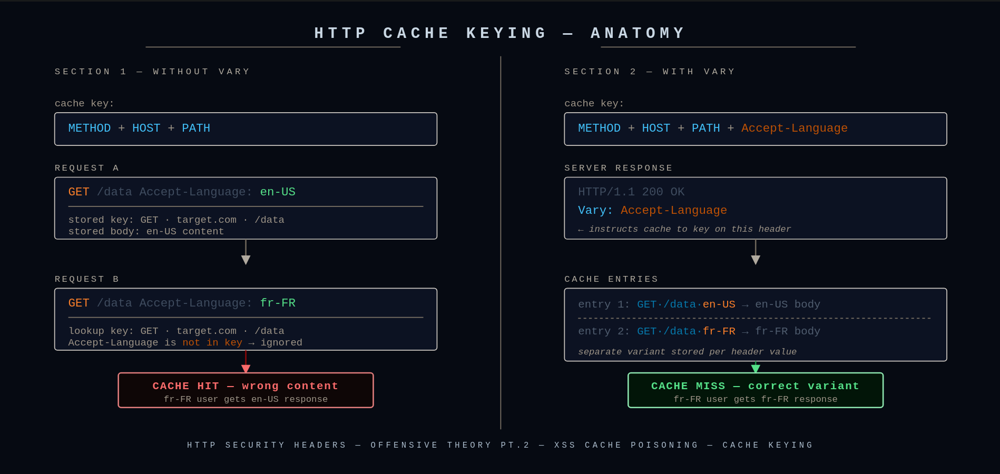
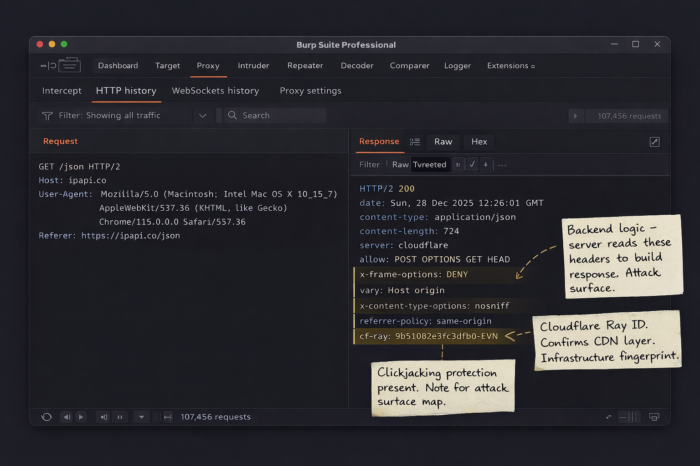

HTTP headers control how browsers and servers interact with data — vulnerabilities in them can affect the entire application. This article covers how to spot custom headers, fingerprint tech stacks, and leverage the Vary header as an offensive recon signal.
#web-security#offensive-security#http
HTTP headers control how browsers and servers interact with data so vulnerabilities in them may affect the whole application. Headers can reveal running services, software versions, and programming languages employed by the application. Such details help in tailoring payloads and selecting appropriate attack methods for further testing or direct HTTP header exploitation.
Real-world examples are used to illustrate how header analysis contributes to vulnerability discovery.
Custom headers are the headers made exclusively for that specific application by their developer team. Usually their names start with X- but now it is more common to see regular names — we can still verify if a header is custom or standard.
Why Pay Attention?
There are multiple reasons why custom headers can be an interesting finding for VAPT. They are not standardized headers defined by RFC, so they lack strict specifications which the VAPT team should be paying attention to.
OSINT wins: find backend code, configs, or comments explaining exactly how the app thinks.
❗
Important
A header becomes security-relevant only when backend logic changes behavior based on its presence or value. Custom header spotting is not for finding the vulnerability itself — it's a blood-trail that will potentially lead us to the security hole.
How to Spot Them?
While headers with X- at the beginning are obvious, others might be much harder. There are still tricks to do it — when we check headers of the site we must pay attention to these potential clues.
Baseline first: know common headers. Anything outside that set demands attention.
Diff responses: normal 200 vs 400/403/500. New headers popping up = custom.
Trigger parser errors: malformed paths, bad encoding, weird methods. Sloppy responses talk more.
Repetition test: hit another site. If the header only exists here, it's custom.
Name smell test: words like internal, debug, env, user, role, session almost certainly are app-specific headers.
After we identify a suspicious header name we must do a quick search to find information about it. The easiest way is to use Google Dorking. Let's look at the example below.
For instance, source code in GitHub repos sometimes includes elements that interact with custom headers. So if you identified the header X-Internal-Token: secret-value, you could use Google to search (dork) "X-Internal-Token" site:github.com, which might reveal hardcoded references in backend code, sample configs or .env files, or middleware and route handlers checking for the header.
Now we will get more technical.
Example: ipapi.co
First let's curl to get the response from the server:
BASH
curl -v https://ipapi.co/json

curl verbose output — response headers are prefixed with <
We are receiving a response from this request. We are interested in the headers, which start with < in verbose mode. In this case our headers are:
As we can see, besides X--prefixed headers we also have cf-ray — which is technically a custom header since it's not standardized by RFC, however in VAPT it's still not application-defined because it's used across all infrastructures running Cloudflare.
In case we don't want to see other data and see headers only, we should use -I instead of -v:
BASH
curl -I https://ipapi.co/json
Now let's see what we can find about this header using Google Dorking.
If we search "cf-ray" we will find out that this is a Cloudflare HTTP header, otherwise known as Ray ID — a hashed value that encodes information about the data center and the visitor's request.
Example: pokeapi.co
Being standardized by RFC doesn't mean it's pointless for VAPT, even if the header is technically harmless.
We identify that this is the version of the API we were sending the request to. So now we know which version to target when looking for vulnerabilities.
x-request-id
By searching:
BASH
"x-request-id" site:github.com "openai"
We can find how that header is used and how it's interacting with our application of interest. Here we managed to find the openai-python repository where we can see how the header is implemented — all object responses in the SDK expose a _request_id property sourced from this header, so you can quickly log failing requests and report them back to OpenAI.
We can even find a specific code snippet by searching:
This represents server-side processing time in milliseconds. In our case it's 4ms because it was a quick auth rejection — real AI queries spike much higher.
This can surface recent reported bugs that may still be exploitable.
And so on — you can try this now with the remaining two custom headers. No vulnerabilities are claimed for this specific target, but in different cases close to this example they absolutely can be found.
Now we see repos where those headers are used and can read the code, comments, questions, and issues around them. This will help us understand what they do and get us on the blood-trail.
💡
Tip
Pay great attention to non-200 responses, especially 400 Bad Request. Custom headers usually appear when we make the server uncomfortable.
Now using the knowledge we have about HTTP headers we will cover other topics related to this subject. This section covers techniques for exploiting weaknesses in HTTP headers, ranging from custom header abuse to cache poisoning and proxy misconfigurations.
Vary HTTP Header
The Vary HTTP response header tells caches which request headers must be considered when deciding whether a cached response can be reused. Without Vary, a cache will assume same URL = same response. That assumption is often wrong. Vary corrects it by saying: same URL + same listed header values = same response.
How does it do that? Caches normally key on [HTTP method] + [URL]. But when Vary exists, the cache key becomes:
TEXT
[HTTP method] + [URL] + [values of headers listed in Vary]
For example:
HTTP
Vary: X-Forwarded-Host, Origin
This means the cache will be reused if: Cache key = / + value of X-Forwarded-Host + value of Origin

How Vary extends the cache key beyond just the URL
❗
Important — What Vary Does NOT Do
It does not validate headers
It does not block headers
It does not make things safe by itself
It does not prevent the server from trusting bad input
It only talks to caches.
Red Team Perspective
If a header appears in the Vary response header, it means the application uses that header when generating the response. That directly implies the server backend is reading that header and it is part of the application logic — which is a signal for the Red Team to keep an eye on it.
Example: X-Forwarded-Host Reflection
First we look at the server's response:
HTTP
HTTP/1.1 200 OK
Server: Apache/2.4.37
Vary: X-Forwarded-Host,Origin
Content-type: text/html; charset=utf-8
Connection: close
Content-Length: 11512
The response contains the Vary header listing X-Forwarded-Host and Origin. We will now leverage this to test if the web application trusts user input from those headers.
Sure enough, the response confirmed that the X-Forwarded-Host header is being reflected in the HTML and is likely being trusted by the application.
This discovery paves the way to using X-Forwarded-Host to check for unexpected behaviors. Techniques such as spoofing, server-side request forgery (SSRF), and browser-powered desync attacks can potentially lead to cache poisoning. It might be possible to poison the cache if some responses use X-Forwarded-Host without including it in Vary. Cache Poisoning will be discussed in the next chapter of Security Headers.
⚠
Warning
Only test against systems you own or have explicit written permission to test.